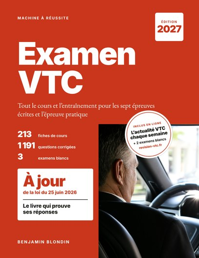
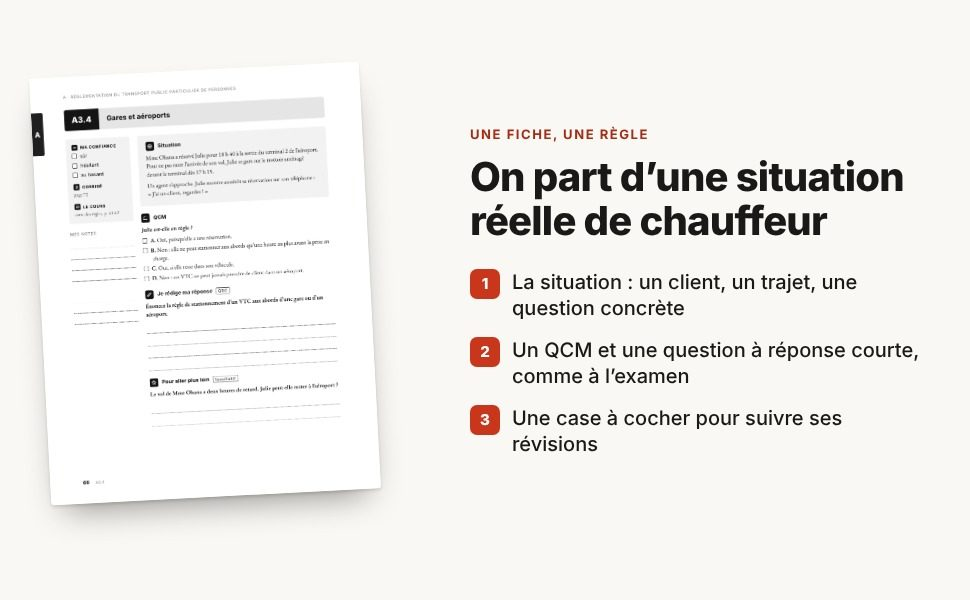
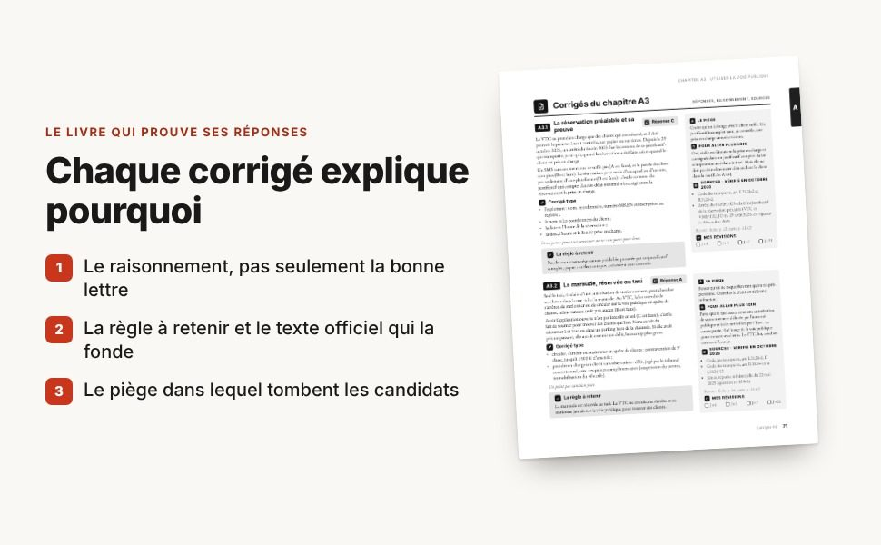
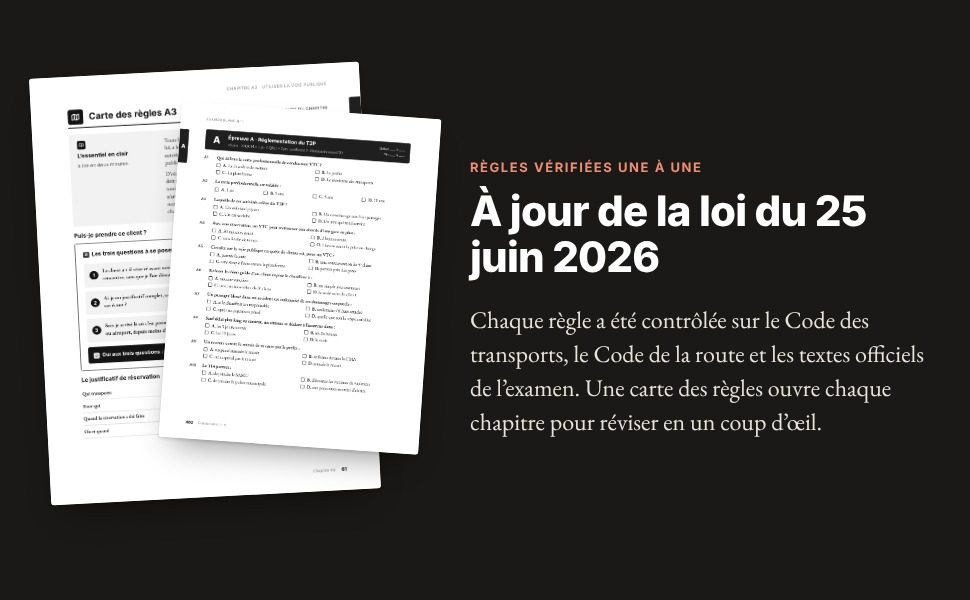

Le livre
Machine à Réussite – Examen VTC 2027
Le cours et l’entraînement pour réussir l’examen VTC 2027 : les sept épreuves écrites et l’épreuve pratique, une règle par fiche, et chaque règle vérifiée sur son texte officiel.

Tout pour préparer l’examen, en 540 pages
- 213 fiches de cours, une règle par fiche, dans 35 chapitres
- 1 191 questions corrigées : QCM et questions à réponse courte, chaque corrigé cite son texte officiel
- Un test diagnostic de 40 questions et trois plannings, sur 4, 8 ou 12 semaines
- 3 examens blancs dans le livre, plus 2 sur ce site, réservés aux lecteurs
- À jour de la loi du 25 juin 2026, règles vérifiées en octobre 2026
Déjà lecteur ? Recevoir les mises à jour ou signaler une erreur
Essayez une fiche du livre
Voici la fiche A3.4, telle qu’elle figure dans le livre. Répondez comme le jour de l’examen : le corrigé s’affiche après votre réponse.
A3.4 Épreuve A, réglementation du transport public particulier de personnes, page 66 du livre
Gares et aéroports
Situation
Mme Ohana a réservé Julie pour 18 h 40 à la sortie du terminal 2 de l’aéroport. Pour ne pas rater l’arrivée de son vol, Julie se gare sur le trottoir aménagé devant le terminal dès 17 h 15.
Un agent s’approche. Julie montre aussitôt sa réservation sur son téléphone : « J’ai un client, regardez ! »
Réponse B
Aux abords des gares et des aéroports, la loi limite le stationnement des VTC sur la voie publique : même avec une réservation, le chauffeur ne peut pas stationner plus d’une heure avant l’heure de prise en charge.
Julie arrive près d’une heure et demie trop tôt : la réservation ne la couvre pas (A est faux), et rester dans le véhicule ne change rien (C est faux). Le VTC a bien le droit de prendre un client qui a réservé dans une gare ou un aéroport (D est faux), souvent dans une zone prévue à cet effet.
Julie aurait dû attendre ailleurs, hors de la chaussée, et revenir à 17 h 40 au plus tôt.
Corrigé type
Aux abords d’une gare ou d’un aéroport, le VTC ne stationne sur la voie publique que s’il a une réservation ; et au plus une heure avant l’heure de prise en charge du client.
La règle à retenir
Aux abords des gares et des aéroports : réservation obligatoire, et stationnement au plus une heure avant la prise en charge.
Le piège
Croire que la réservation autorise tout. Elle autorise à prendre le client, pas à occuper les abords pendant des heures.
Pour aller plus loin
Le vol de Mme Ohana a deux heures de retard. Julie peut-elle rester à l’aéroport ?
Elle garde sa réservation, mais pas le droit de stationner aux abords : l’heure limite se calcule sur la nouvelle heure de prise en charge. Elle attend ailleurs, hors de la chaussée, et revient au plus une heure avant.
Mon bilan
Mes révisions, comptées à partir d’aujourd’hui
Sources du corrigé, vérifiées en octobre 2026 :
- Code des transports, art. L3120-2, II, 3°
- Code des transports, art. D3120-3
- Bpifrance Création, fiche VTC (2024)
À quoi ressemblent les pages



La méthode : apprendre, se tester, réviser au bon moment
- Savoir d’où vous partezUn test diagnostic de 40 questions mesure votre niveau. Selon votre score, vous suivez un planning sur 4, 8 ou 12 semaines, qui vous dit quoi faire chaque jour.
- Se tester avant de lireChaque chapitre commence par un pré-test de 5 questions, puis une carte des règles avec tableaux et schémas.
- Apprendre sur des cas concretsChaque fiche part d’une situation de chauffeur, puis vous fait répondre à un QCM et rédiger une réponse courte, comme à l’examen. La réponse n’est jamais sur la page de la question.
- Comprendre ses erreursChaque corrigé donne le raisonnement complet, la règle à retenir, le texte officiel qui la fonde et le piège à éviter.
- Réviser au bon momentDes cases J+1, J+3, J+7 et J+21 sur chaque corrigé : les révisions espacées font retenir durablement.
- S’entraîner en conditions réellesTrois examens blancs complets dans le livre, deux de plus sur ce site, au format de l’examen, chronométrés et notés selon le barème.
Un livre vérifié, et tenu à jour après son impression
Les règles de l’examen VTC et du métier changent : décrets, arrêtés, cotisations, plateformes. Le livre ne s’arrête pas à sa date d’impression. Voici ce que l’auteur s’engage à faire.
- Vérifier chaque règle sur sa sourceChaque corrigé du livre cite le texte officiel qui le fonde (Code des transports, Code de la route, arrêtés de l’examen, Urssaf, BOFiP) et le mois de sa vérification. Une règle qui ne repose pas sur un texte officiel, ou sur deux sources indépendantes qui concordent, n’est pas enseignée. En vigueur, adopté mais pas encore applicable, simple projet : les trois états sont toujours distingués.
- Revérifier le livre entier toutes les trois semainesLes règles du livre sont recontrôlées sur les textes en vigueur, en plus de la veille du Journal officiel faite chaque semaine pour le site. Les articles de loi utiles au métier sont recopiés et expliqués dans la rubrique Réglementation VTC.
- Publier chaque correctionToute correction est inscrite sur la page Mises à jour du livre : la date, la fiche et sa page dans le livre, ce que dit le livre, ce qu’il faut retenir et le texte qui fonde la nouvelle règle.
- Vous l’envoyerLes lecteurs inscrits reçoivent la correction par e-mail, avec la page corrigée en PDF, à imprimer ou à garder sur leur téléphone.
- Répondre à chaque signalementUne erreur, une règle qui a changé, un passage pas clair : chaque signalement est vérifié et reçoit une réponse. Une erreur confirmée est corrigée pour tous.
Questions fréquentes
Le livre couvre-t-il toutes les épreuves de l’examen VTC ?
Oui. Ses 35 chapitres couvrent les sept épreuves écrites d’admissibilité (A à G) et l’épreuve pratique d’admission : 213 fiches de cours, dont 10 pour l’épreuve pratique.
Le livre est-il à jour pour l’examen 2027 ?
Ses règles ont été vérifiées en octobre 2026 et il est à jour de la loi du 25 juin 2026. Les changements de 2026 et 2027 (précompte des cotisations par les plateformes au 1er janvier 2027, fin de l’accès par l’expérience, facturation électronique) sont signalés dans les fiches concernées. Si une règle change après l’impression, la correction est publiée sur la page Mises à jour du livre et envoyée aux lecteurs inscrits.
Puis-je essayer avant d’acheter ?
Oui. La fiche A3.4 de cette page est reproduite telle qu’elle figure dans le livre, avec son corrigé. Les questions et les guides du site indiquent aussi les fiches du livre qui traitent chaque règle.
Comment faire les deux examens blancs en ligne ?
Ils sont sur la page Examens blancs n° 4 et 5 de ce site, à faire à l’écran, chronométrés et corrigés, ou à imprimer. Ils sont réservés aux lecteurs : une question dont la réponse se trouve dans le livre en ouvre l’accès.
Espace lecteurs
Vous avez le livre : recevez ses mises à jour, faites les examens blancs n° 4 et 5, ou signalez une erreur.
Recevoir les mises à jour du livre
Un e-mail seulement quand une règle change ou qu’une erreur est corrigée, avec la page corrigée en PDF. Vous confirmez votre inscription en cliquant sur le lien reçu par e-mail ; un lien dans chaque message permet de se désinscrire.
Signaler une erreur ou faire une critique
Vous avez repéré une règle qui a changé, une erreur, une réponse qui vous semble fausse, un passage pas clair ? Dites-le : chaque signalement est vérifié sur le texte officiel. Le livre doit être juste, pas seulement avoir raison.
Questions des lecteurs
- Faut-il avoir acheté le livre pour s’inscrire aux mises à jour ?
- Oui. Les pages corrigées sont réservées aux lecteurs : l’inscription demande un mot qui se trouve dans le livre. La liste des corrections reste publique sur la page Mises à jour du livre.
- Combien d’e-mails vais-je recevoir ?
- Un e-mail seulement quand une règle du livre change ou qu’une erreur est corrigée. Pas de lettre d’information régulière, pas de publicité.
- Que devient mon adresse e-mail ?
- Elle sert uniquement à vous envoyer les mises à jour du livre. Elle n’est ni vendue, ni prêtée, ni utilisée pour autre chose. Chaque e-mail contient un lien de désinscription, qui efface votre adresse.
- J’ai trouvé une erreur : que se passe-t-il ensuite ?
- Elle est vérifiée sur le texte officiel. Si elle est confirmée, elle est corrigée, inscrite sur la page Mises à jour du livre et envoyée à tous les lecteurs inscrits. Si vous avez laissé votre adresse, vous recevez la réponse, même quand le livre était juste.